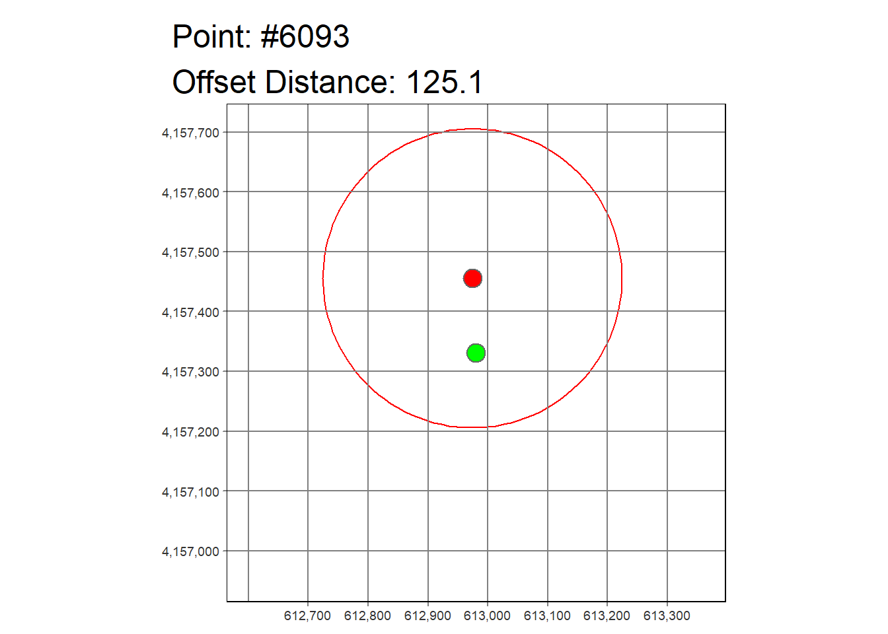

library(sf) |> suppressPackageStartupMessages()
library(dplyr) |> suppressPackageStartupMessages()
library(tmap)Breaking News: tmap 3.x is retiring. Please test v4, e.g. with
remotes::install_github('r-tmap/tmap')This is an exercise in anonymizing points by:
Load packages:
library(sf) |> suppressPackageStartupMessages()
library(dplyr) |> suppressPackageStartupMessages()
library(tmap)Breaking News: tmap 3.x is retiring. Please test v4, e.g. with
remotes::install_github('r-tmap/tmap')Create some fake points:
n <- 20000
epsg_utm10n <- 32610
lons <- runif(n, min = -121.8, max = -121.7)
lats <- runif(n, min = 37.5, max = 37.6)
pts_orig_lonlat_df <- data.frame(id = 1:n, lon = lons, lat = lats)
pts_orig_utm10_sf <- pts_orig_lonlat_df |>
st_as_sf(coords = c("lon", "lat"), crs = 4326) |>
st_transform(epsg_utm10n)
pts_orig_utm10_sfSimple feature collection with 20000 features and 1 field
Geometry type: POINT
Dimension: XY
Bounding box: xmin: 605935.8 ymin: 4151022 xmax: 614907.7 ymax: 4162219
Projected CRS: WGS 84 / UTM zone 10N
First 10 features:
id geometry
1 1 POINT (612867.8 4151843)
2 2 POINT (607831.4 4161038)
3 3 POINT (611156 4154474)
4 4 POINT (614408.4 4153196)
5 5 POINT (609447.8 4157800)
6 6 POINT (614422 4157486)
7 7 POINT (610545.6 4152458)
8 8 POINT (609779.8 4154130)
9 9 POINT (614493.4 4153802)
10 10 POINT (611920.5 4154349)plot(pts_orig_utm10_sf |> head() |> st_geometry(), pch = 16, axes = TRUE) Create the offset points:
pts_orig_utm10_df <- pts_orig_utm10_sf |>
st_coordinates() |>
as.data.frame() |>
setNames(c("x", "y"))
head(pts_orig_utm10_df) x y
1 612867.8 4151843
2 607831.4 4161038
3 611156.0 4154474
4 614408.4 4153196
5 609447.8 4157800
6 614422.0 4157486rs <- runif(n, min=10, max = 150)
# summary(rs)
thetas <- runif(n, min = 0, max = 2 * pi)
# summary(thetas)
pts_offset_utm10_df <- data.frame(id_offset = 1:n,
x_offset = pts_orig_utm10_df$x + (rs * cos(thetas)),
y_offset = pts_orig_utm10_df$y + (rs * sin(thetas)))
pts_orig_offset_tbl <- cbind(pts_orig_utm10_df, pts_offset_utm10_df) |>
mutate(x_diff = x_offset - x, y_diff = y_offset - y)
head(pts_orig_offset_tbl) x y id_offset x_offset y_offset x_diff y_diff
1 612867.8 4151843 1 612781.8 4151830 -86.02456 -12.571663
2 607831.4 4161038 2 607941.5 4161125 110.07532 86.942096
3 611156.0 4154474 3 611118.8 4154480 -37.18214 6.489758
4 614408.4 4153196 4 614387.5 4153308 -20.92830 111.257633
5 609447.8 4157800 5 609375.9 4157731 -71.95754 -69.099124
6 614422.0 4157486 6 614425.3 4157498 3.22336 11.569071# summary(pts_orig_offset_tbl$x_diff)
# summary(pts_orig_offset_tbl$y_diff)Convert the offset points to a spatial object:
pts_offset_utm10_sf <- pts_offset_utm10_df |>
st_as_sf(coords = c("x_offset", "y_offset"), crs = epsg_utm10n)
pts_offset_utm10_sfSimple feature collection with 20000 features and 1 field
Geometry type: POINT
Dimension: XY
Bounding box: xmin: 605830.9 ymin: 4150960 xmax: 614978.6 ymax: 4162323
Projected CRS: WGS 84 / UTM zone 10N
First 10 features:
id_offset geometry
1 1 POINT (612781.8 4151830)
2 2 POINT (607941.5 4161125)
3 3 POINT (611118.8 4154480)
4 4 POINT (614387.5 4153308)
5 5 POINT (609375.9 4157731)
6 6 POINT (614425.3 4157498)
7 7 POINT (610470.1 4152431)
8 8 POINT (609866.8 4154173)
9 9 POINT (614618.4 4153873)
10 10 POINT (611788.5 4154283)Plot a few of the original and offset points together for a reality-check:
(six_cols <- RColorBrewer::brewer.pal(6, "Paired"))[1] "#A6CEE3" "#1F78B4" "#B2DF8A" "#33A02C" "#FB9A99" "#E31A1C"plot(pts_offset_utm10_sf |> head() |> st_geometry(), col = six_cols, pch = 16, axes = TRUE)
plot(pts_orig_utm10_sf |> head() |> st_geometry(), col = six_cols, pch = 16, add = TRUE)Buffer the offsets:
pts_offset_buffed_sf <- pts_offset_utm10_sf |>
st_buffer(dist = 250)
pts_offset_buffed_sfSimple feature collection with 20000 features and 1 field
Geometry type: POLYGON
Dimension: XY
Bounding box: xmin: 605580.9 ymin: 4150710 xmax: 615228.6 ymax: 4162573
Projected CRS: WGS 84 / UTM zone 10N
First 10 features:
id_offset geometry
1 1 POLYGON ((613031.8 4151830,...
2 2 POLYGON ((608191.5 4161125,...
3 3 POLYGON ((611368.8 4154480,...
4 4 POLYGON ((614637.5 4153308,...
5 5 POLYGON ((609625.9 4157731,...
6 6 POLYGON ((614675.3 4157498,...
7 7 POLYGON ((610720.1 4152431,...
8 8 POLYGON ((610116.8 4154173,...
9 9 POLYGON ((614868.4 4153873,...
10 10 POLYGON ((612038.5 4154283,...Plot a handful of points, their offsets, and buffers for a reality-check:
for (i in sample(1:n, size = 5)) {
one_circle_sf <- pts_offset_buffed_sf |> slice(i)
one_pt_sf <- pts_orig_utm10_sf |> slice(i)
one_pt_offset_sf <- pts_offset_utm10_sf |> slice(i)
# combined_bounding_box_sfc <- st_union(one_circle_sf |> st_bbox() |> st_as_sfc(),
# one_pt_sf |> st_bbox() |> st_as_sfc())
one_pt_ctr <- one_pt_sf |> st_coordinates() |> as.numeric()
s <- 400
one_pt_ext_df <- data.frame(x = one_pt_ctr[1] + c(-s, s, s, -s, -s),
y = one_pt_ctr[2] + c(s, s, -s, -s, s))
one_pt_ext_sf <- st_polygon(x = list(as.matrix(one_pt_ext_df)), dim = "XY") |>
st_sfc(crs = epsg_utm10n) |>
data.frame(id = 1, geom = _) |>
st_sf()
print(tm_shape(one_pt_ext_sf) +
tm_borders(alpha = 0) +
tm_shape(one_pt_sf) +
tm_symbols(col = "green", border.col = NA) +
tm_shape(one_pt_offset_sf) +
tm_symbols(col = "red", border.col = NA) +
tm_shape(one_circle_sf) +
tm_borders(col = "red") +
tm_grid() +
tm_layout(main.title = paste0("Point: #", i, "\nOffset Distance: ",
round(st_distance(one_pt_sf, one_pt_offset_sf),1))))
}